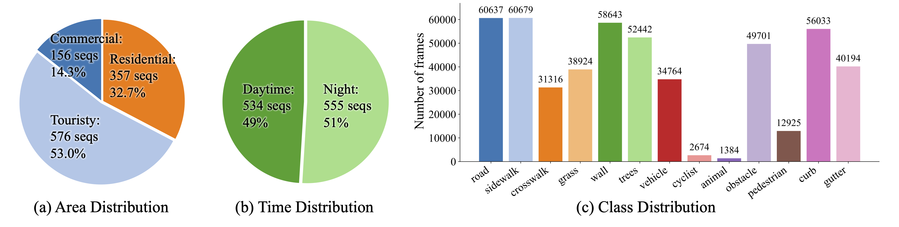

Sidewalk Occupancy Prediction via 2D-3D Consistency Learning with Pseudo Labels
Yukai Ma 1,2 , Jeo Lin 1,3 , Liu Liu 1,4 , Honglin He 1 , Lulu Ricketts 3 , Brad Squicciarini 3 , Yong Liu 2 , Bolei Zhou 1
1 University of California, Los Angeles , 2 Zhejiang University , 3 Coco Robotics , 4 Massachusetts Institute of Technology
TL;DR
- WalkOCC is a hybrid ray-marching 3D semantic occupancy learning framework for sidewalk robots that couples geometry grounding from limited paired LiDAR--RGB sequences with scalable learning from large-scale unpaired monocular images, improving robustness and generalization without costly 3D annotations..
🧭 Learns reliable sidewalk 3D occupancy from scarce paired sensor data by bootstrapping pseudo-3D supervision, stabilizing training compared to purely self-supervised pipelines.
🧩 Scales to diverse real-world appearances via mixed training on additional 2D-only images, strengthening cross-domain generalization beyond the paired-data distribution.
📦 Introduces Sidewalk3D, a large-scale, cross-domain sidewalk perception dataset with LiDAR--camera paired sequences across multiple locations and times, plus 3D semantic occupancy annotations for benchmarking.
Visualization of Cross-Embodiment Inference
Coco Delivery Robot. A wheeled robot with a front-facing fisheye camera, approximately 40 cm tall, primarily used for last-mile food and parcel delivery on sidewalks.
Diverse Test Set Inference Visualization
Our proposed SideWalk3D dataset captures diverse appearances across regions and time periods (daytime and nighttime), providing a challenging benchmark for urban sidewalk occupancy prediction.
Model Output Visualization
WalkOCC predicts not only 3D occupancy but also 2D depth and semantic segmentation. In the video, the first row shows pseudo-labels used for supervision, and the second row shows the model's inference results.
Automatic Pseudo-Label Generation
Pseudo-Label Generation. With pre-calibrated and time-synchronized sensors, we project 3D LiDAR points onto 2D images to inherit per-point semantic labels. We then generate dense occupancy pseudo-labels using the SurroundOcc
High-Quality Manual Annotations for the Test Set
Refined LiDAR ground-truth examples. We visualize manually annotated global point clouds from three representative scenarios: tourist area (day), tourist area (night), and commercial district.
Long-Horizon Inference Visualization
Long-horizon demo on a wheeled-legged robot dog. The robot runs along a sidewalk in a residential area in Los Angeles.
WalkOCC Model architecture

We present WalkOCC, a hybrid Ray-marching-based occupancy-learning framework for sidewalk occupancy prediction using a monocular RGB camera. Our approach consists of two key components: (i) a depth-aware lifting architecture that transforms front-view images into 3D semantic occupancy grids, and (ii) a hybrid training strategy that leverages both 2D and 3D supervision via a ray-marching-based 2D-3D consistency loss. Enforcing this consistency enables effective learning from large-scale 2D-only data while preserving geometric accuracy, which in turn improves prediction quality and cross-domain generalization.
Dataset Distribution

Data distribution and representative scenes from Sidewalk3D. Our dataset spans diverse domains, geographic regions, and illumination conditions (day and night).
Reference